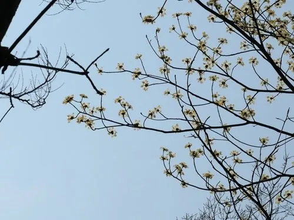

乔木 · 植物界
檫木 Sassafras tzumu

中国特有的落叶乔木，早春先花后叶、满树黄花，木材坚韧可供造船，是南方重要的用材与观赏树种。
- 分类
- 门被子植物门纲木兰纲目樟目科樟科属檫木属
- 栖息环境
- 海拔 1500 米以下的山坡、沟谷与林缘，喜光喜温暖湿润
- 地理分布
- 中国长江流域以南及华南、西南地区，为中国特有树种
- 保护级别
- 暂无评估；中国未列入国家重点保护野生植物名录
物种志
檫木为落叶乔木，高可达 35 m，树干通直，树皮黄绿色或灰褐色、纵裂；叶片互生，卵形或倒卵形，常 2–3 裂，边缘全缘。花期 2–3 月，先花后叶，伞形花序生于枝顶，花小、黄色，满树黄花；果实为核果，近球形，成熟时蓝黑色，果托红色。
檫木是中国特有树种，分布于长江流域以南及华南、西南地区，喜光、喜温暖湿润，适宜深厚肥沃、排水良好的酸性土壤，生长迅速。木材坚韧、耐腐、不翘不裂，是造船、建筑、家具与农具的优良用材；树皮与根可入药；早春黄花、秋季红叶，观赏价值高。檫木是南方山区重要的速生用材树种，也常作为退化山地造林的先锋树种。
形态与习性
- 株高可达 35 m，树干通直
- 花期2–3 月，先花后叶
- 果期7–8 月，核果蓝黑色
- 光照喜光，不耐长期荫蔽
- 土壤深厚肥沃的酸性壤土
- 主要用途造船与建筑用材、园林观赏、树皮根入药
趣味知识
- 檫木早春先花后叶，满树黄花，是南方山区最早报春的树种之一。
- 檫木木材坚韧耐腐、不易干裂，是造船的优良用材。
- 檫木的果实成熟时蓝黑色，红色果托十分醒目。